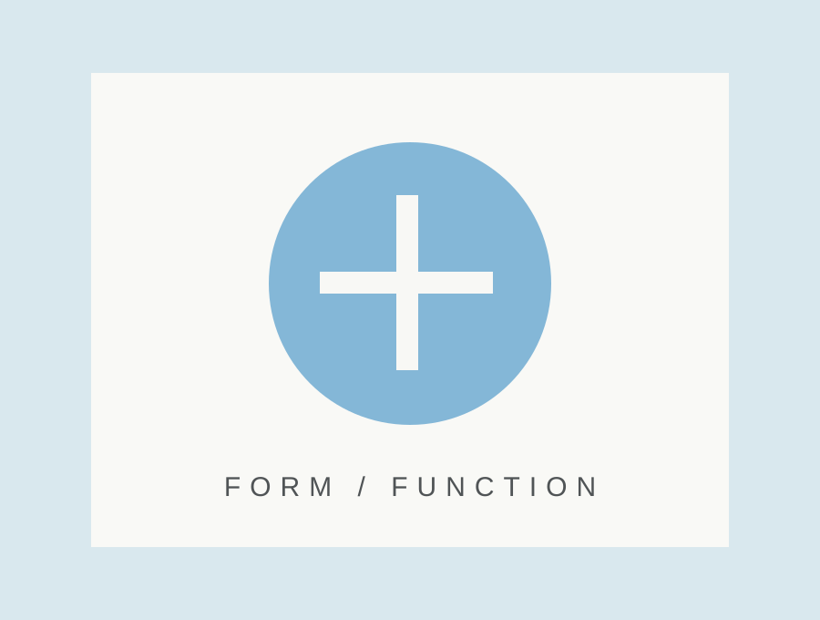
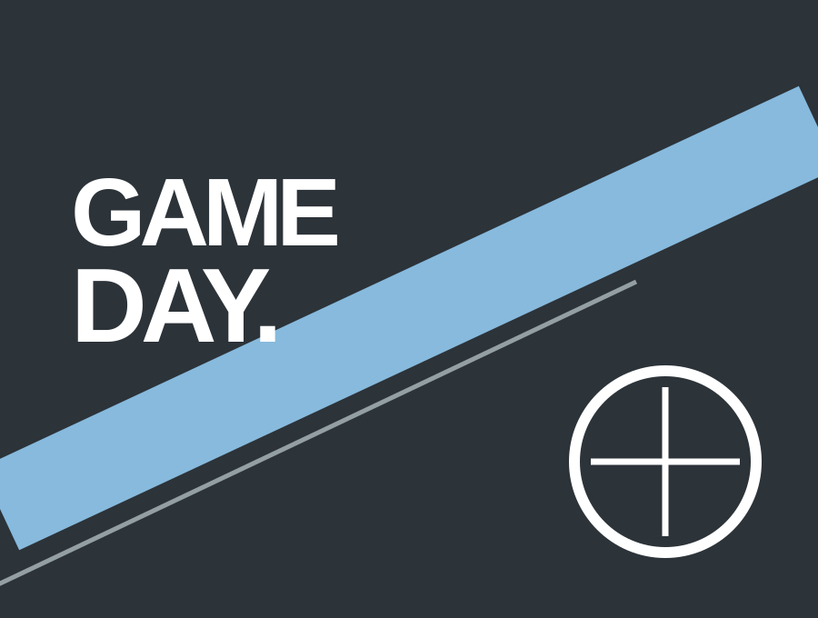
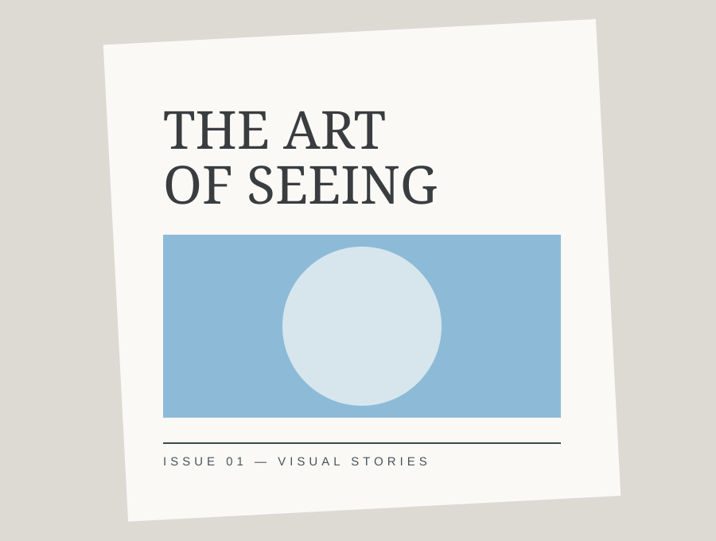
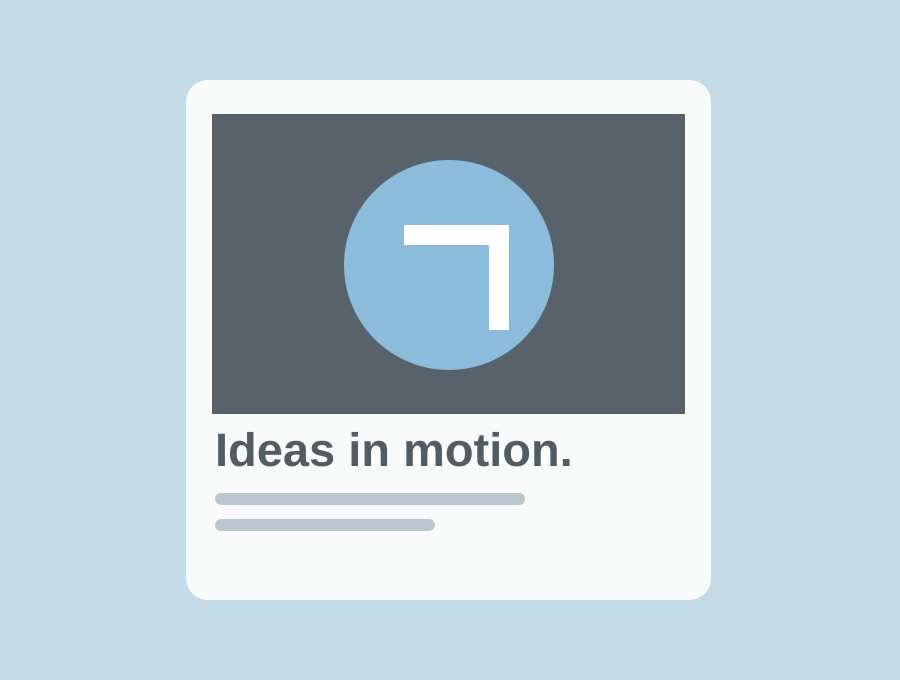
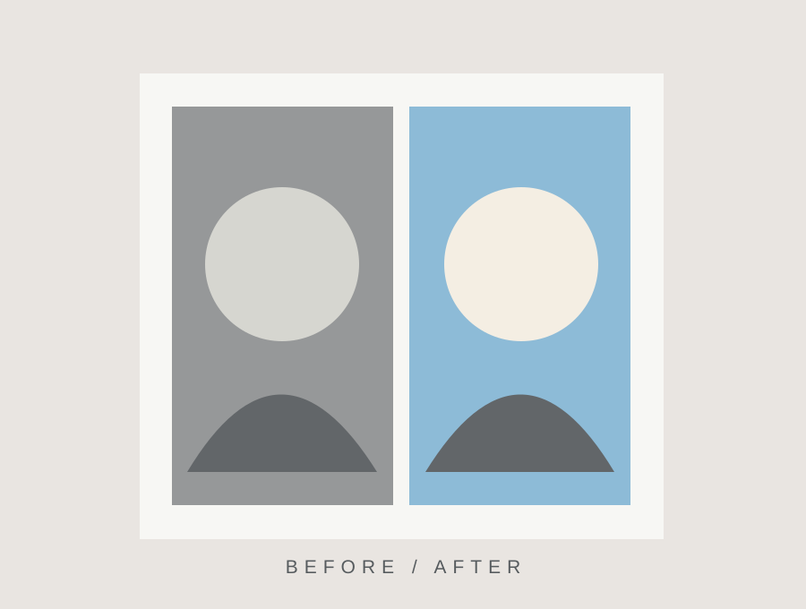

Design that makes an impression.
Thoughtful graphic design, branding and visual storytelling for people, places and ideas worth noticing.
Explore the work ↗Made to stand out.
A collection of thoughtful ideas, clear communication, and design with purpose.

Brand identity exploration ↗
Brand identity, marks and visual systems designed to give an idea a distinctive presence.

Game day graphics ↗
Bold, high-impact layouts created for the energy of game day.

Editorial & print ↗
Intentional typography and grids for print pieces that invite a closer look.

Digital campaigns ↗
Clean, engaging campaigns that make every frame count.

Photo restoration ↗
Careful image restoration and retouching with attention to the original.
Portfolio images shown are sample concepts. Replace them with your own work using the dashboard.
Creative thinking. Considered design.
LAW of design is an independent creative practice led by an experienced designer and art director. From the first sketch to the finishing details, every project is approached with curiosity, clarity and care.
Specialties include brand identity, print and editorial design, sports graphics, social media, marketing collateral and photo restoration.
Have something in mind?
Let's make something great together. Get in touch to talk about your next project.